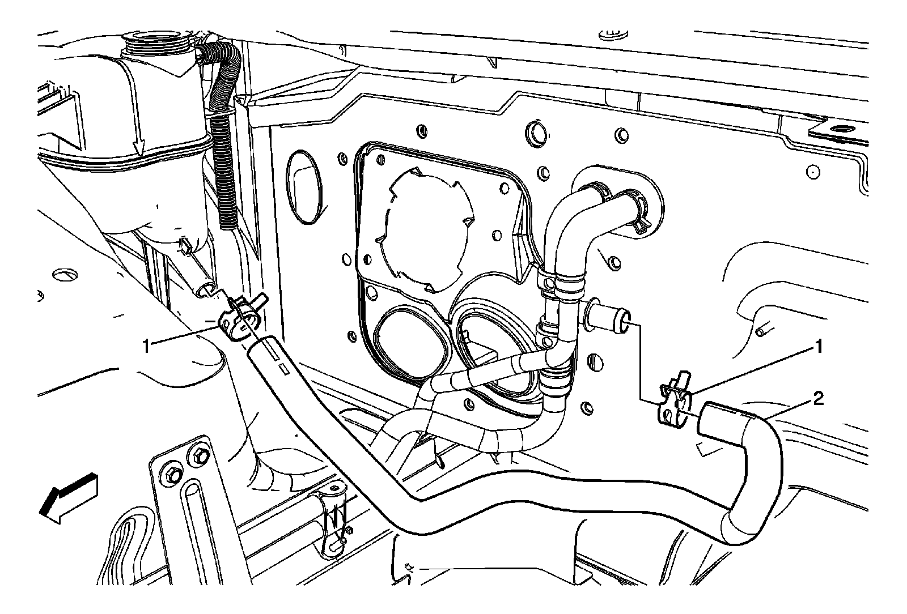
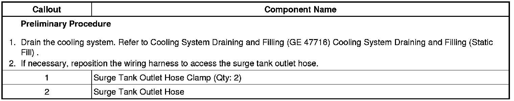

Operation CHARM
: Car repair manuals for everyone.
Home
>>
Cadillac
>>
2008
>>
SRX AWD V8-4.6L
>>
Repair and Diagnosis
>>
Engine, Cooling and Exhaust
>>
Cooling System
>>
Coolant Reservoir
>>
Service and Repair
>>
Radiator Surge Tank Outlet Hose/Pipe Replacement
>>
Right Hand Drive
Right Hand Drive
Radiator Surge Tank Outlet Hose/Pipe Replacement (Right Hand Drive)
Radiator Surge Tank Outlet Hose/Pipe:

